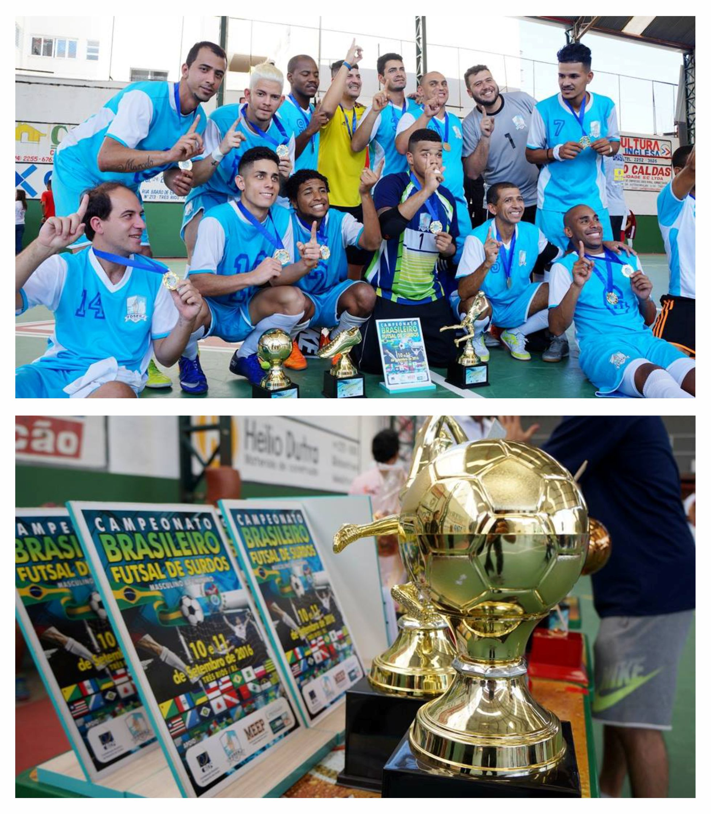

No início da década de 60 um pequeno grupo formado por surdos que viviam na cidade de Uberlândia se reunião frequentemente pra trocar ideias, lamentar suas tristezas e comemorar as alegrias, sentimentos difíceis de ser compartilhados e compreendido por outro grupo da sociedade. O tempo foi passando e esse grupo percebeu que os anseio as aspirações e as necessidades eram comuns entre eles e que juntos estavam fortalecidos pra lutar contra todas dificuldades encontradas né uma sociedade discriminadora e preconceituosa da época. Foi esse espírito de luta que o grupo liderado por Francisco José Dias resolveu criar a associação de surdos de Uberlândia no dia 31 de agosto de 1966 oficializou se a sua fundação que passou a ser a cede na residência do Sr. Francisco José Dias o qual foi escolhido para ser presidente no período de 2 anos, assim as reuniões foram programadas passando ter um caráter social onde os surdos se reunião para planejar posteriormente realizar passeios, festas, jogos e ao mesmo tempo receber informações e conhecimentos trazidos pelo Sr. Francisco José Dias do Instituto nacional de Surdos do Rio de Janeiro no decorrer do tempos vários conflitos foram surgindo, a diretoria mudou, o Sr. José Osmar Costa membro do grupo assumiu a presidência tudo era muito difícil o grupo começava a se desfazer.
Some quick example text to build on the card title and make up the bulk of the card's content.
Mais InformaçõesSome quick example text to build on the card title and make up the bulk of the card's content.
Mais InformaçõesSome quick example text to build on the card title and make up the bulk of the card's content.
Mais InformaçõesFormar uma equipe de futebol era o desejo maior que unia todos os associados na esperança de competir e representar a ASUL em todo Brasil, pois sabiam que o esporte era de fundamental importância para eles, a ASUL sobrevivia com pequenas contribuições de seus associados e as federações que eram afiliadas não prestavam nenhum benefício e exigiam taxas altas de contribuições, o tempo foi passando e outras diretorias foram contempladas com as eleições. Presidentes no período de 1985 a 1996 – Ricardo de Jesus Vital, Alberto Antônio Pereira Braga, Paulo de Jesus Oliveira, Adão Mendes Pereira, Carlos Humberto de Oliveira todos eles se empenharam para cumprir com a função e o cargo que ocupavam, mas com um fator de complicação, não possuía uma cede própria e nem recursos financeiros para alugar um prédio, e por isso repassaram em vários locais como a Escola Estadual 13 de maio, Escola Estadual Coronel Teófilo Carneiro e Escola Estadual Leôncio Chaves as quais emprestavam uma sala para realizações das reuniões e para guardar os escassos mobiliários que componha se de uma mesa, uma cadeira, um arquivo, um armário, uma máquina de datilografia e os troféus recebidos em competições esportivas, por isso consideradas relíquias dos associados.
